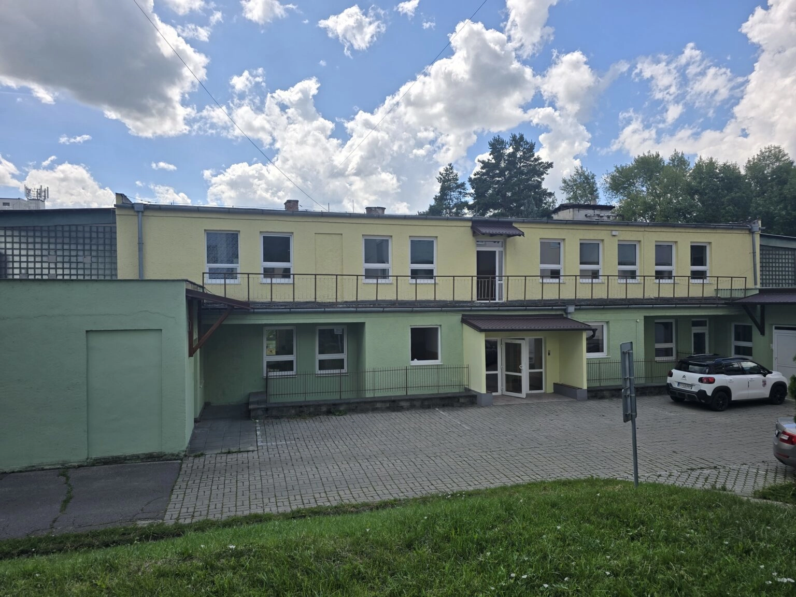
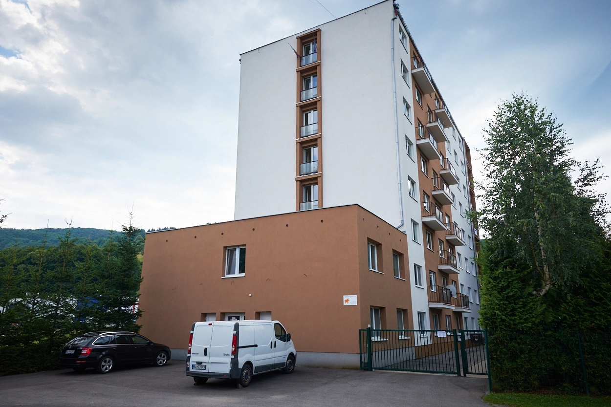

Návrh 10 · Domovská stránka a /portfólio
Dnes je stmavenie roztiahnuté cez celú dlaždicu a končí až v 62 % jej výšky — fotka je preto tmavá aj tam, kde nie je žiadny text. Tri spôsoby, ako ho stiahnuť dole za text. Dlaždice sú živé, prejdite po nich myšou — hover vysunie „Zobraziť“ a je vidieť, ako sa každé riešenie s tým vysporiada.
Stav: neaplikované — iba návrh
Rovnaká fotka, rovnaký text, líši sa iba stmavenie.
TerazCez celú dlaždicu

01 Občianske stavbyFotka stmavená až do 62 % výšky. Obloha a strecha domu strácajú kontrast zbytočne.
O1Kratší prechod
Tá istá vrstva, len končí v 42 %. Najmenší zásah — mení sa jedno číslo v prechode.
O2Pás pri spodku
Vrstva má pevnú výšku 52 % a sedí pri spodku. Horné dve tretiny fotky sú úplne čisté.
O3Panel podľa textu
Stmavenie je priamo na textovom bloku, takže je presne také vysoké ako text — ani o pixel viac.
Najdlhší názov v dátach. Tu sa ukáže rozdiel: pevné riešenia musia rátať s najhorším prípadom, panel podľa textu sa prispôsobí sám.
Všimnite si: pri O2 sa text tlačí k hornej hrane pásu, pri O3 panel jednoducho narastie.
TerazCez celú dlaždicu

03 Občianske stavbyO1Kratší prechod
Horné riadky názvu už vychádzajú z prechodu von — na svetlej fotke by boli slabo čitateľné.
O2Pás pri spodku
Text sa zmestí, ale pri prejdení myšou už „Zobraziť“ tlačí kategóriu nad hranu pásu.
O3Panel podľa textu
Panel narástol o jeden riadok a prechod ostal rovnako plynulý. Nič netreba dolaďovať.
Odporúčam O3 — panel podľa textu. Je to presne to, čo ste chceli — stmavenie je len pod textom a nikde inde — ale hlavne je jediné, ktoré nemusí rátať s najhorším prípadom. Pevná výška u O2 sa musí nastaviť podľa najdlhšieho názvu, takže pri krátkych názvoch stmavuje zbytočne veľa a pri hoveri aj tak praská. O1 je zmena jedného čísla a ak chcete minimálny zásah, je to obhájiteľné — ale pri trojriadkovom názve vychádza text z prechodu von.
Vo variante O3 samostatná vrstva so stmavením zaniká a prechod sa presunie priamo na textový blok. Ten sa zároveň roztiahne na celú šírku a odsadenie preberie zvnútra.
// PRED — dve samostatné vrstvy <div className="absolute inset-0 transition-opacity duration-500 bg-[linear-gradient(to_top,rgba(0,0,0,.9)_0%,rgba(0,0,0,.5)_32%,transparent_62%)] group-hover/tile:opacity-[0.92]" /> <div className="absolute bottom-5 left-[22px] right-[22px] z-20"> // PO — jedna vrstva, stmavenie nesie priamo text // (vrstvu so stmavením zmažte celú) <div className="absolute inset-x-0 bottom-0 z-20 px-[22px] pt-11 pb-5 bg-[linear-gradient(to_top,rgba(0,0,0,0.93)_0%,rgba(0,0,0,0.8)_52%,transparent_100%)]">
| Prvok | Hodnota |
|---|---|
| Umiestnenie | absolute inset-x-0 bottom-0 — cez celú šírku, prisadnuté k spodku |
| Odsadenie | Hore 44 px (priestor na doznenie prechodu), po stranách 22 px, dole 20 px |
| Prechod | linear-gradient(to top, rgba(0,0,0,.93) 0%, rgba(0,0,0,.8) 52%, transparent 100%) |
| Vrstvenie | z-20. Poradové číslo ostáva z-20 hore vľavo, mimo panela |
| Výška | Riadi ju obsah: výška textu + 44 px hore + 20 px dole. Pri dvojriadkovom názve zhruba 47 % výšky dlaždice, pri trojriadkovom zhruba 54 %. Pri prejdení myšou +47 px |
| Pri prejdení myšou | Panel narastie spolu s „Zobraziť“. Samostatná zmena krytia už nie je potrebná |
| Zaniká | Celá vrstva .scrim aj jej group-hover/tile:opacity-[0.92] |
| Dotknutý súbor | src/components/sections/Projects.tsx — komponent ProjectTile |
ProjectTile.